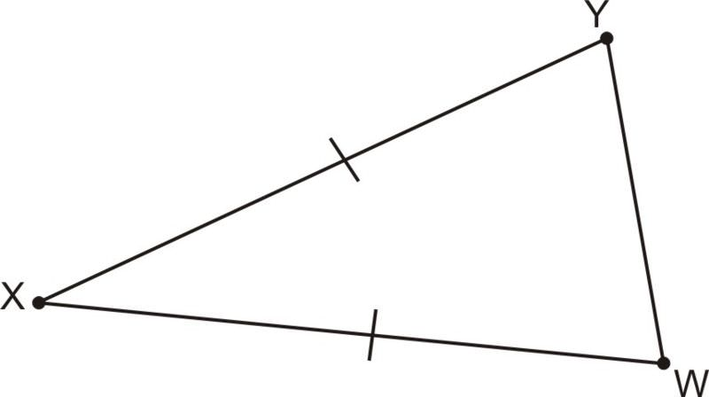

Triángulo Isósceles
Un triángulo isósceles es un tipo de triángulo que tiene al menos dos lados de igual longitud. Esto significa que dos de sus lados son iguales, mientras que el tercer lado puede tener una longitud diferente. Además, los ángulos opuestos a los lados iguales también tienen la misma medida.
- Lados iguales: El triángulo isósceles tiene al menos dos lados de igual longitud. Estos lados se llaman lados iguales o lados congruentes.
- Ángulos iguales: Los ángulos opuestos a los lados iguales del triángulo isósceles tienen la misma medida. Estos ángulos se llaman ángulos de base.
- Lado desigual: El tercer lado del triángulo isósceles, llamado lado desigual o base, tiene una longitud diferente a los otros dos lados.
- Eje de simetría: El triángulo isósceles tiene un eje de simetría que divide el triángulo en dos partes iguales. Este eje de simetría es la línea que pasa por el punto medio de la base y es perpendicular a ella.
- Altura: La altura de un triángulo isósceles es la línea perpendicular a la base desde el vértice opuesto. La altura divide al triángulo en dos triángulos congruentes y se encuentra en el eje de simetría.
- Área: El área de un triángulo isósceles se puede calcular utilizando la fórmula (base * altura) / 2.
